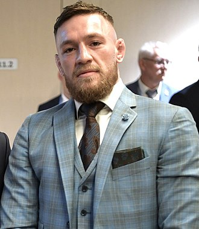
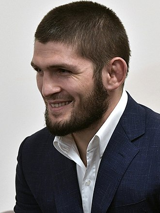

Mixed martial arts (MMA), sometimes referred to as cage fighting, no holds barred (NHB) and ultimate fighting, is a full-contact combat sport based on striking, grappling and ground fighting, incorporating techniques from various combat sports from around the world. The first documented use of the term mixed martial arts was in a review of UFC 1 by television critic Howard Rosenberg in 1993. The question of who actually coined the term is subject to debate.
During the early 20th century, various interstylistic contests took place throughout Japan and in the countries of the Four Asian Tigers. In Brazil, there was the sport of Vale Tudo, in which fighters from various styles fought with little to no rules. The Gracie family was known to promote Vale Tudo matches as a way to promote their own Brazilian jiu-jitsu style. A precursor to modern MMA was the 1976 Ali vs. Inoki exhibition bout (which ended in a draw after 15 rounds), fought between boxer Muhammad Ali and wrestler Antonio Inoki in Japan, where it later inspired the foundation of Pancrase in 1993 and the Pride Fighting Championships in 1997.
In 1980, CV Productions, Inc. created the first regulated MMA league in the United States, called Tough Guy Contest, which was later renamed Battle of the Superfighters. The company sanctioned ten tournaments in Pennsylvania. However, in 1983 the Pennsylvania State Senate passed a bill prohibiting the sport. In the 1990s, the Gracie family brought their Brazilian jiu-jitsu style, first developed in Brazil from the 1920s, to the United States – which culminated in the founding of the Ultimate Fighting Championship (UFC) promotion company in 1993. The company held an event with almost no rules, mostly due to the influence of Art Davie and Rorion Gracie attempting to replicate Vale Tudo fights that existed in Brazil and would later implement a different set of rules (example: eliminating kicking a grounded opponent), which differed from other leagues which were more in favour of realistic, street like fights.
Down below, there is a table with some MMA fighters:
| # | Name | Current age | Photo |
|---|---|---|---|
| 1 | Conor McGregor | 33 |  |
| 2 | Khabib Nurmagomedov | 33 |  |
| 3 | Israel Adesanya | 32 |